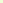

Geschwindigkeitskurs (6 Lektionen)
Im Mittelpunkt steht die Verbesserung Ihrer Schreibgeschwindigkeit. Sie schreiben häufig vorkommende Wörter und längere Texte.
Zahlen (2 Lektionen)
Schreiben Sie die Ziffern in der obersten Reihe mit 10 Fingern.
Sonderzeichen (4 Lektionen)
Schreiben Sie die Sonderzeichen mit 10 Fingern.
Kurs für den Ziffernblock (3 Lektionen)
Schreiben Sie die Ziffern auf dem Ziffernblock mit 10 Fingern.
Sie können jeden Kurs sofort starten, nachdem Sie diesen Kurs verlassen haben.